|
Physics Laboratory |

|
Excel Tutorial #6 |
|
5. Displaying Symbols E |
Trigonometry |
7. Graphing F |
When solving trigonometric expressions like sine, cosine and tangent, it is very important to realize that Excel uses radians, not degrees to perform these calculations! If the angle is in degrees you must first convert it to radians.
There are two easy ways to do this.
- Recall that p = 180°. Therefore,
if the angle is in degrees, multiply it by
p/180° to convert it to radians.
With Excel, this conversion can be written PI( )/180. For
example, to convert 45° to radians, the Excel expression would be
45*PI( )/180 which equals 0.7854 radians.
- Excel has a built-in function known as RADIANS(angle)
where angle is the angle in degrees you wish to convert
to radians. For example, the Excel expression used to convert
270° to radians would be RADIANS(270) which
equals 4.712389 radians
 You can use the DEGREES(angle) function
to convert radians into degrees. For example, DEGREES(PI( ) )
equals 180.
You can use the DEGREES(angle) function
to convert radians into degrees. For example, DEGREES(PI( ) )
equals 180.
Excel uses several built-in trig functions. Those that you will use most often are displayed in the table below. Note that the arguements for the SIN( ), COS( ) and TAN( ) functions are, by default, radians. Also, the functions ASIN( ), ACOS( ) and ATAN( ) return values in terms of radians. (When working with degrees, you will need to properly use the DEGREES( ) and RADIANS( ) functions to convert to the correct unit.)
| Mathematical Expression |
Excel Expression |
Excel Examples |
| sine: sin(q) | SIN(number) | SIN(30) equals -0.98803, the sine of 30 radians
SIN(RADIANS(30)) equals 0.5, the sine of 30° |
| cosine: cos(q) | COS(number) | COS(1.5) equals 0.07074, the cosine of 1.5 radians
COS(RADIANS(1.5)) equals 0.99966, the sine of 1.5° |
| tangent: tan(q) | TAN(number) | TAN(2) equals -2.18504, the tangent of 2 radians
TAN(RADIANS(2)) equals 0.03492, the tangent of 2° |
| arcsine: sin-1(x) | ASIN(number) | ASIN(0.5) equals 0.523599 radians
DEGREES(ASIN(0.5)) equals 30°, the arcsine of 0.5 |
| arccos: cos-1(x) | ACOS(number) | ACOS(-0.5) equals 2.09440 radians
DEGREES(ACOS(-0.5)) equals 120°, the arccosine of -0.5 |
| arctangent: tan-1(x) | ATAN(number) | ATAN(1) equals 0.785398 radians
DEGREES(ATAN(1)) equals 45°, the arctangent of 1 |
Below are a few examples of problems involving trigonometry and how we used Excel to help solve them.

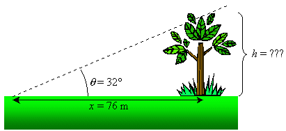
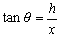
Solving for the height of the tree, h, we find
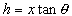
. The screen shot below shows how we used Excel to determine that the height of the tree is 47 m.
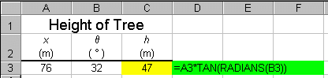
Note the use of the RADIANS( ) function in the
above example.

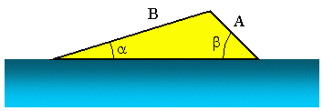
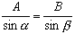
We can rewrite this equation as
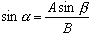
. Using the arcsine (inverse sine) we can find the angle a using the equation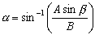
The screen shot below shows how we used Excel to determine that the launch angle of the ramp is 14.04°.
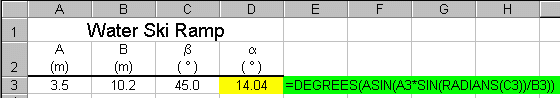
Note the use of the DEGREES( ) and RADIANS( )
function in the above example.

In our final trigonometry example, we will use Excel to examine the
trig identity
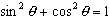
Notice in the screen shot below that this identity holds true when q is given in radians and degrees.
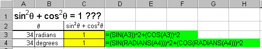
Note the units for the angle
q are placed in different cells than the
numbers. If we place the numbers and the units in the same cell,
Excel will not be able to decipher the number and therefore we will not
be able to reference the cells for use in any equation!
See the complete list of Excel's
built-in mathematical and
trigonometric functions and their descriptions.
If you have a question or comment, send an e-mail to
.
|
5. Displaying Symbols E |

|
7. Graphing F |
Copyright © 2000, Clemson University. All Rights Reserved.
This page was created by
.